Intro to intro to statistics, classical methods in statistics
Wouter van Amsterdam
2017-10-23
Last updated: 2017-10-31
Code version: 52f415c
Setup
Teacher: Cas Kruitwagen, c.l.j.j.kruitwagen@umcutrecht.nl
Load some R-packages
library(data.table)
library(amstR)
library(magrittr)
library(ggplot2)Introduction to case studies
Basic steps
- research objective
- which variables in your datacan be analyzed to answer the objective
- explore data
- decide on statistical analysis
- interpret the output
- draw conclusions
- relate results back to research question
Definitions
- ‘skew’ direction: based on the tail of the data.
Case study: Balance
Authors: Teasdal et al.
Research question
- Maintain balance when you are concentrating
- Is the difficulty more pronounced in the elderly
- Is there a difference between swaying in the forward/backward and side-to-side direction
Old: mean age 71.1 Young: mean age 24.8
Variables FB: forwards / backwards motion (mm) SS: Side-to-side motion (mm) Age-group
load(amstR::fromParentDir("data/balance.RData"))
summary(balance) FB SS age
Min. :14.00 Min. :10.00 Elderly:9
1st Qu.:17.00 1st Qu.:14.00 Young :8
Median :21.00 Median :17.00
Mean :22.47 Mean :18.88
3rd Qu.:25.00 3rd Qu.:21.00
Max. :50.00 Max. :41.00 head(balance) FB SS age
1 19 14 Elderly
2 30 41 Elderly
3 20 18 Elderly
4 19 11 Elderly
5 29 16 Elderly
6 25 24 ElderlyPlots
boxplot(FB~age, data = balance)
boxplot(SS~age, data = balance)
# pairs(balance)Distributions in scatterplot
with(balance,
amstR::marginal_plot(x = FB,
y = SS,
group = age))Loading required package: scales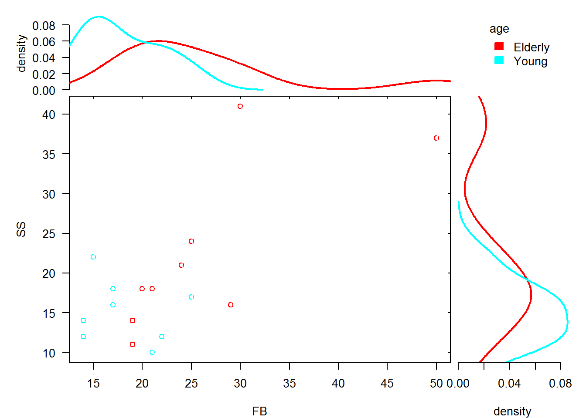
Stats
t.test(balance$FB)
One Sample t-test
data: balance$FB
t = 10.852, df = 16, p-value = 8.705e-09
alternative hypothesis: true mean is not equal to 0
95 percent confidence interval:
18.08099 26.86019
sample estimates:
mean of x
22.47059 t.test(FB~age, data = balance, paired = F)
Welch Two Sample t-test
data: FB by age
t = 2.3035, df = 10.971, p-value = 0.04183
alternative hypothesis: true difference in means is not equal to 0
95 percent confidence interval:
0.3627401 16.0539266
sample estimates:
mean in group Elderly mean in group Young
26.33333 18.12500 t.test(SS~age, data = balance, paired = F)
Welch Two Sample t-test
data: SS by age
t = 1.9228, df = 10.5, p-value = 0.08204
alternative hypothesis: true difference in means is not equal to 0
95 percent confidence interval:
-1.07436 15.26880
sample estimates:
mean in group Elderly mean in group Young
22.22222 15.12500 t.test(balance$FB, balance$SS, paired = T)
Paired t-test
data: balance$FB and balance$SS
t = 2.2494, df = 16, p-value = 0.03892
alternative hypothesis: true difference in means is not equal to 0
95 percent confidence interval:
0.2066374 6.9698332
sample estimates:
mean of the differences
3.588235 t.test(balance$FB - balance$SS)
One Sample t-test
data: balance$FB - balance$SS
t = 2.2494, df = 16, p-value = 0.03892
alternative hypothesis: true mean is not equal to 0
95 percent confidence interval:
0.2066374 6.9698332
sample estimates:
mean of x
3.588235 Conclusions
- Research question 1 is not answerable, there is no comparison between concentrating
- Whith a paired t-test, the amount of sway is different between forward/backward and sideward
Case study Eggs
Quin(1988) Effect of season (winter/spring and summer/autumn) and adult density (8, 15, 30, 45 per 225cm^2 enclosure), on prudiction of egg masses by intertidal pulmona limpets (Siphonaria diemenensis)
3 replicates per exposure situation
import data
load(fromParentDir("data/eggs.Rdata"))
summary(limpet.eggs) season density eggs
spring:12 Min. : 8.00 Min. :0.3560
summer:12 1st Qu.:13.25 1st Qu.:0.9165
Median :22.50 Median :1.4330
Mean :24.50 Mean :1.4717
3rd Qu.:33.75 3rd Qu.:1.9227
Max. :45.00 Max. :2.8750 Plots
boxplot(eggs~season, data = limpet.eggs)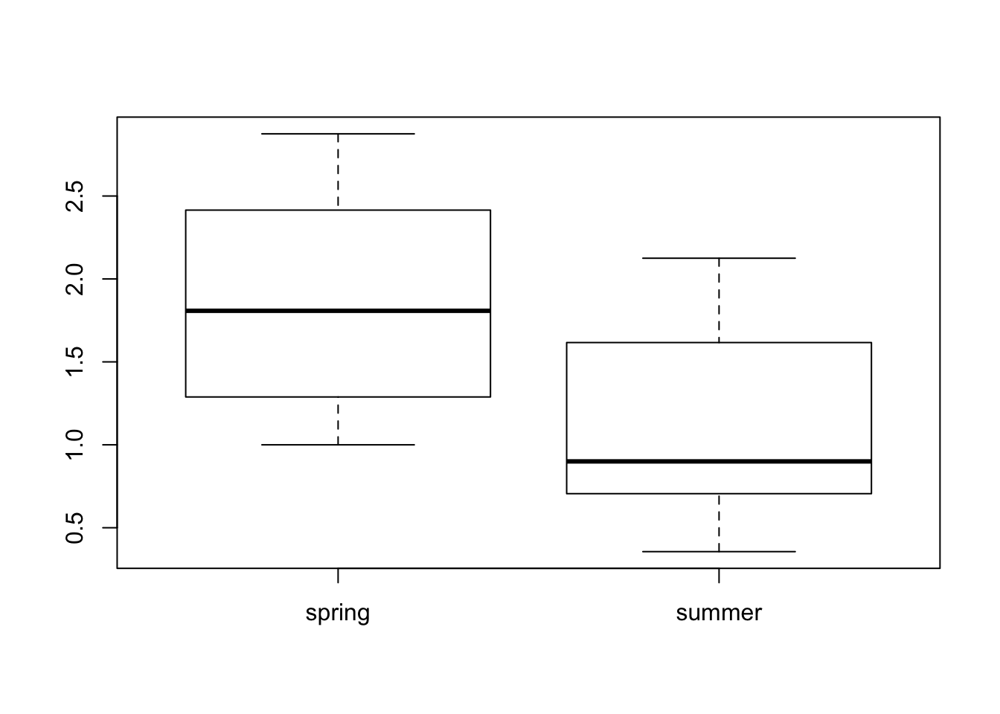
boxplot(eggs~as.factor(density), data = limpet.eggs)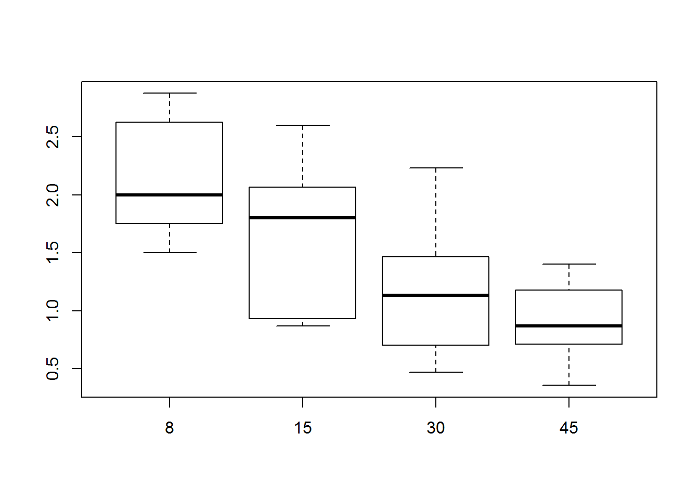
boxplot(eggs~season*density, data = limpet.eggs,
col = c("blue","red"))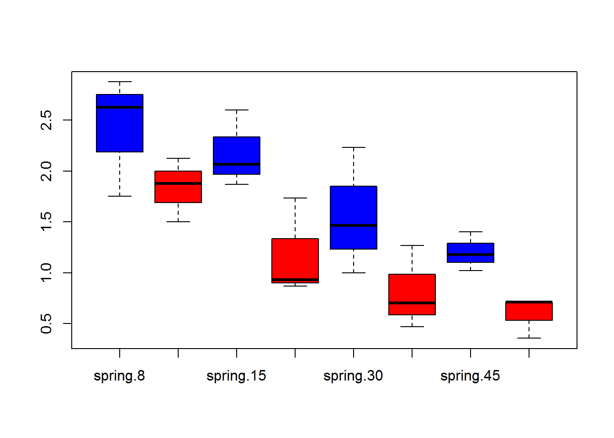
limpet.eggs %>%
ggplot(aes(x = as.factor(density), y = eggs, col = season)) +
geom_boxplot() +
geom_point()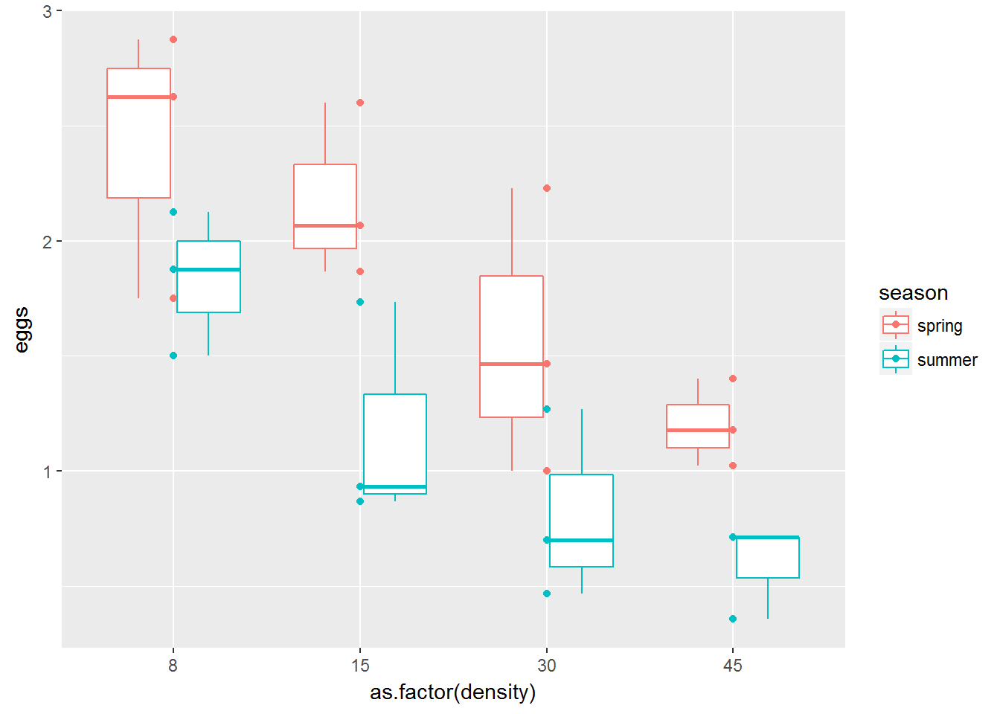
Stats
fit0 <- lm(eggs~season + density, data = limpet.eggs)
fit1 <- lm(eggs~season + density + season*density, data = limpet.eggs)
summary(fit0)
Call:
lm(formula = eggs ~ season + density, data = limpet.eggs)
Residuals:
Min 1Q Median 3Q Max
-0.66324 -0.24009 -0.04174 0.27996 0.56676
Coefficients:
Estimate Std. Error t value Pr(>|t|)
(Intercept) 2.62602 0.18116 14.496 2.08e-12 ***
seasonsummer -0.73600 0.16280 -4.521 0.000187 ***
density -0.03209 0.00571 -5.621 1.41e-05 ***
---
Signif. codes: 0 '***' 0.001 '**' 0.01 '*' 0.05 '.' 0.1 ' ' 1
Residual standard error: 0.3988 on 21 degrees of freedom
Multiple R-squared: 0.7125, Adjusted R-squared: 0.6851
F-statistic: 26.02 on 2 and 21 DF, p-value: 2.072e-06summary(fit1)
Call:
lm(formula = eggs ~ season + density + season * density, data = limpet.eggs)
Residuals:
Min 1Q Median 3Q Max
-0.65468 -0.25021 -0.03318 0.28335 0.57532
Coefficients:
Estimate Std. Error t value Pr(>|t|)
(Intercept) 2.664166 0.234118 11.380 3.45e-10 ***
seasonsummer -0.812282 0.331092 -2.453 0.023450 *
density -0.033650 0.008259 -4.074 0.000591 ***
seasonsummer:density 0.003114 0.011680 0.267 0.792533
---
Signif. codes: 0 '***' 0.001 '**' 0.01 '*' 0.05 '.' 0.1 ' ' 1
Residual standard error: 0.4079 on 20 degrees of freedom
Multiple R-squared: 0.7135, Adjusted R-squared: 0.6705
F-statistic: 16.6 on 3 and 20 DF, p-value: 1.186e-05plot(fit0)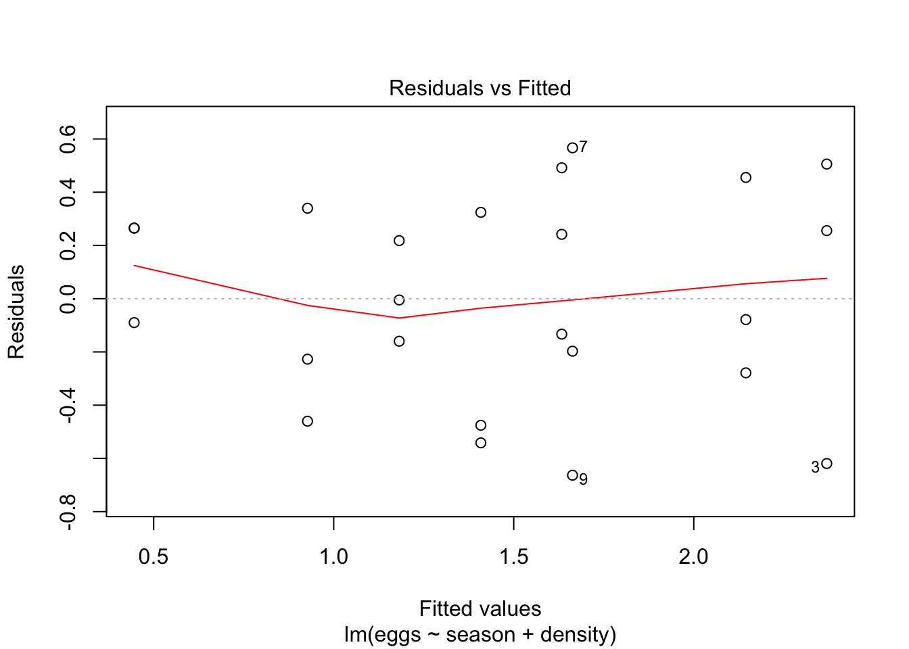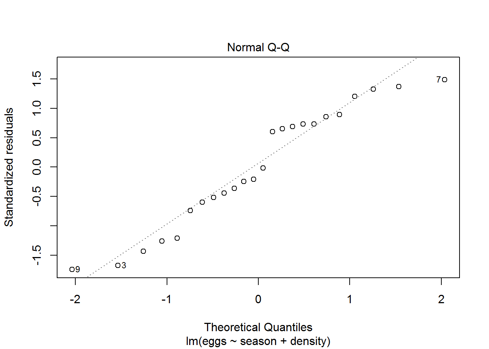 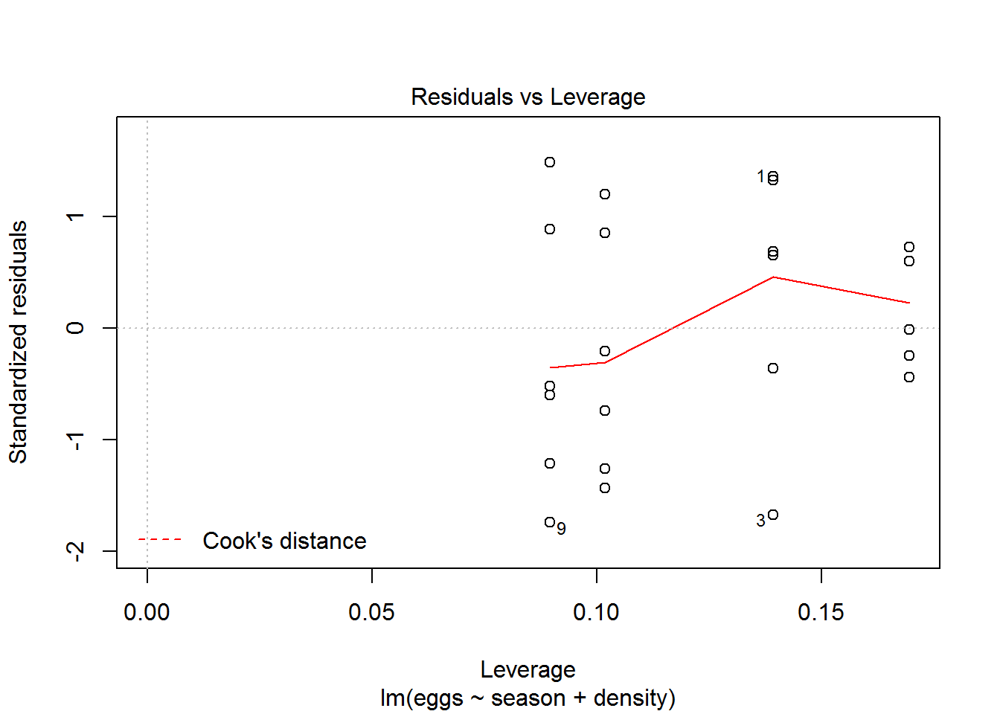
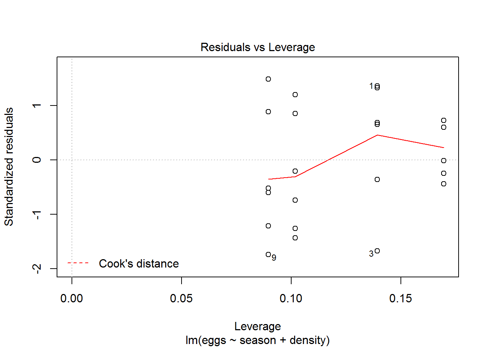
Case study: platelet calcium and blood pressure
Reation between calcium in cells (platetelet) and blood pressure * 38 subjects with normal blood pressure * Blood pressure (average of systolic and diastolic blood pressure) * Free calcium concentration in blood platelets
Import data
load(fromParentDir("data/bloodpressurecalcium.RData"))Plots
plot(calcium~bp, data = bloodpressurecalcium)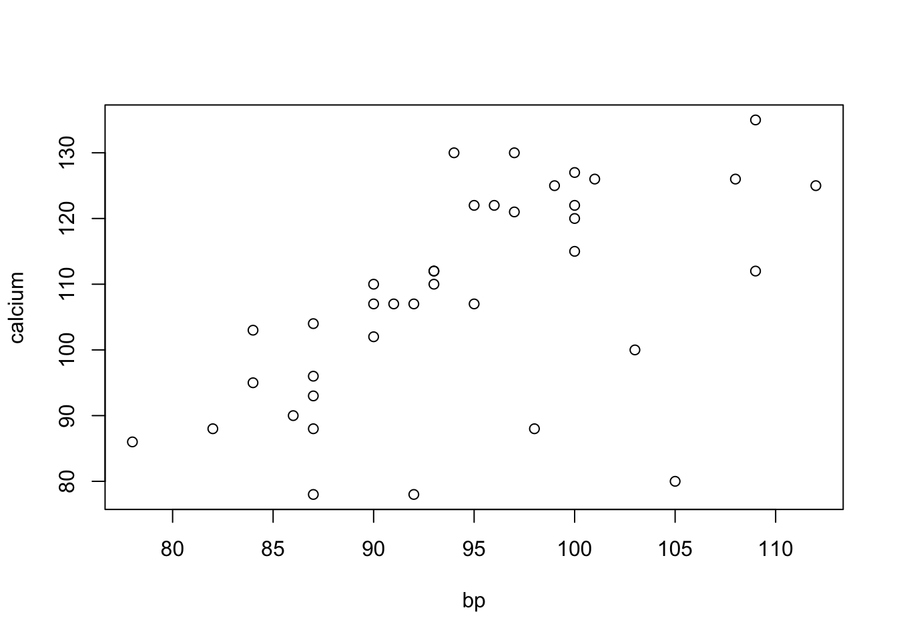
Stats
fit0 <- lm(calcium~bp, data = bloodpressurecalcium)
summary(fit0)
Call:
lm(formula = calcium ~ bp, data = bloodpressurecalcium)
Residuals:
Min 1Q Median 3Q Max
-40.098 -4.795 2.808 7.637 22.714
Coefficients:
Estimate Std. Error t value Pr(>|t|)
(Intercept) -2.2009 25.6452 -0.086 0.932083
bp 1.1648 0.2704 4.307 0.000122 ***
---
Signif. codes: 0 '***' 0.001 '**' 0.01 '*' 0.05 '.' 0.1 ' ' 1
Residual standard error: 13.24 on 36 degrees of freedom
Multiple R-squared: 0.3401, Adjusted R-squared: 0.3217
F-statistic: 18.55 on 1 and 36 DF, p-value: 0.0001219plot(fit0)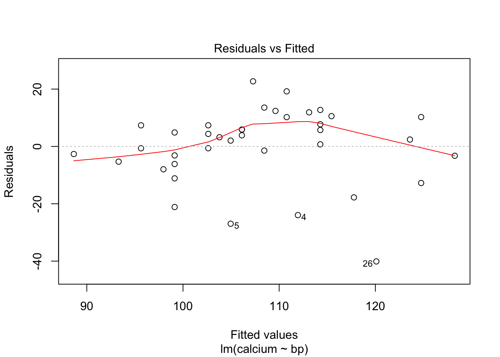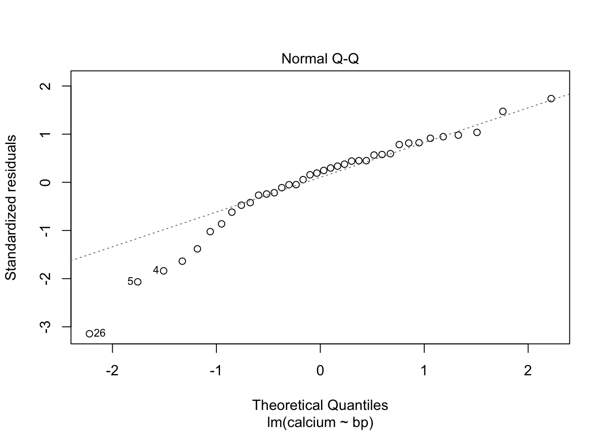 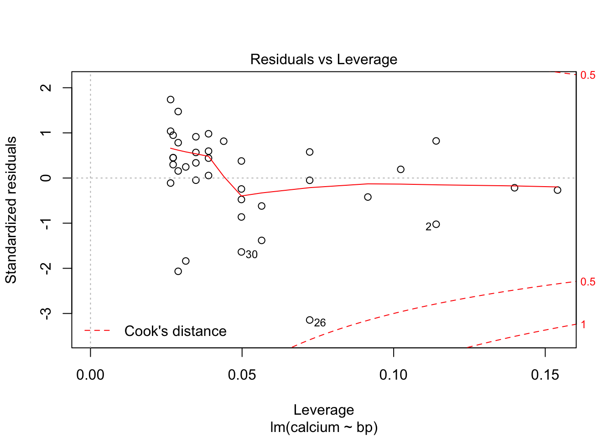
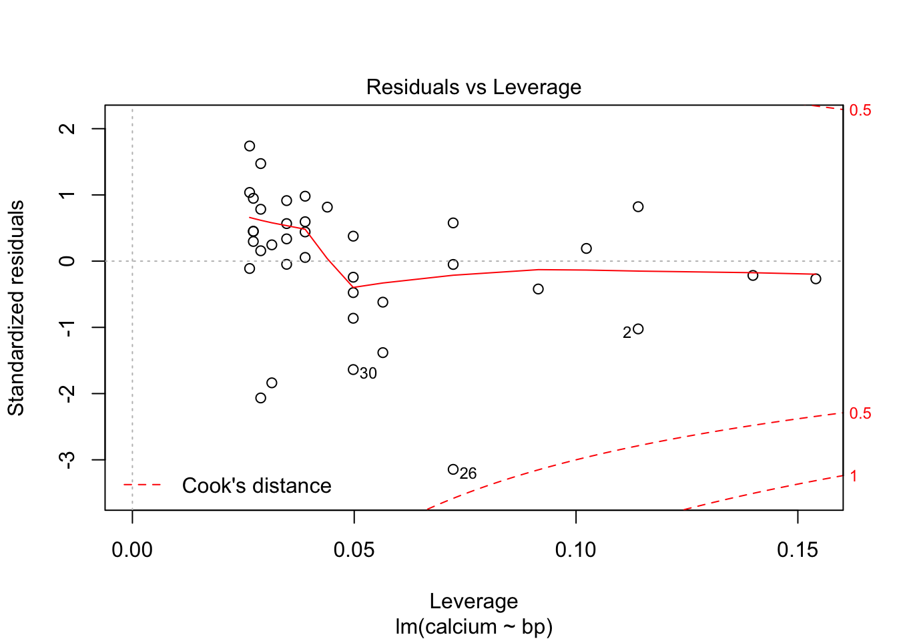
cor.test(~bp+calcium, data = bloodpressurecalcium)
Pearson's product-moment correlation
data: bp and calcium
t = 4.3071, df = 36, p-value = 0.0001219
alternative hypothesis: true correlation is not equal to 0
95 percent confidence interval:
0.3238485 0.7609758
sample estimates:
cor
0.5831581 SO2 (with latex \(SO_{2}\))
Air pollution with sulfur dioxide, \(SO_{2}\)
- Temp mean year temperature (in oF)
- Factories number of factories with more than 20 employees
- Population size of the population (in thousands)
- Wind mean wind speed over a year (miles per hour)
- Rainfall mean yearly rainfall (in inches)
- Daysrain mean number of days of rainfall per year
- SO2 The amount of SO2 in the air (in μg/m3)
import data
load(fromParentDir("data/so2.RData"))
summary(so2) city SO2 temp
Albany : 1 Min. : 8.00 Min. :43.50
Albuquerque : 1 1st Qu.: 13.00 1st Qu.:50.60
Atlanta : 1 Median : 26.00 Median :54.60
Baltimore : 1 Mean : 30.05 Mean :55.76
Buffalo : 1 3rd Qu.: 35.00 3rd Qu.:59.30
Charleston : 1 Max. :110.00 Max. :75.50
(Other) :35
factories population wind rainfall
Min. : 35.0 Min. : 71.0 Min. : 6.000 Min. : 7.05
1st Qu.: 181.0 1st Qu.: 299.0 1st Qu.: 8.700 1st Qu.:30.96
Median : 347.0 Median : 515.0 Median : 9.300 Median :38.74
Mean : 463.1 Mean : 608.6 Mean : 9.444 Mean :36.77
3rd Qu.: 462.0 3rd Qu.: 717.0 3rd Qu.:10.600 3rd Qu.:43.11
Max. :3344.0 Max. :3369.0 Max. :12.700 Max. :59.80
daysrain region
Min. : 36.0 Southeast :12
1st Qu.:103.0 Northeast : 8
Median :115.0 Midwest/West:21
Mean :113.9
3rd Qu.:128.0
Max. :166.0
head(so2) city SO2 temp factories population wind
1 Chicago 110 50.6 3344 3369 10.4
2 Providence 94 50.0 343 179 10.6
3 Philadelphia 69 54.6 1692 1950 9.6
4 Cleveland 65 49.7 1007 751 10.9
5 Pittsburg 61 50.4 347 520 9.4
6 Hartford 56 49.1 412 158 9.0
rainfall daysrain region
1 34.44 122 Midwest/West
2 42.75 125 Northeast
3 39.93 115 Northeast
4 34.99 155 Midwest/West
5 36.22 147 Northeast
6 43.37 127 NortheastPlots
plot(SO2~temp, data = so2)
boxplot(SO2~region, data = so2)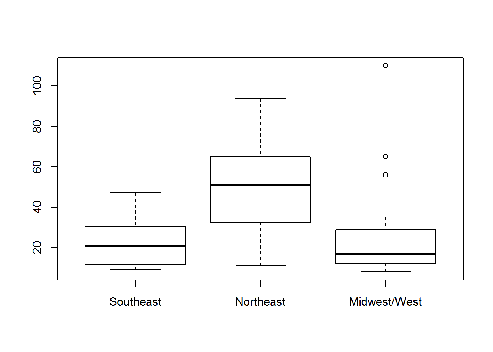
pairs(so2[, setdiff(colnames(so2), c("city"))])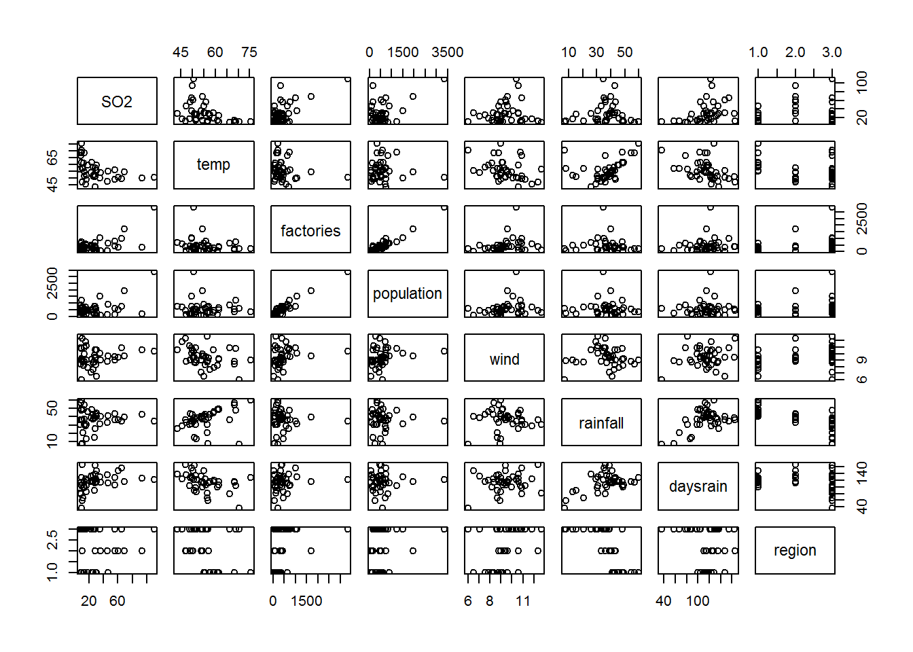
Stats
fit_all <- lm(
reformulate(termlabels = setdiff(colnames(so2), c("SO2", "city", "factories")),
response = "SO2"),
data = so2)
plot(fit_all)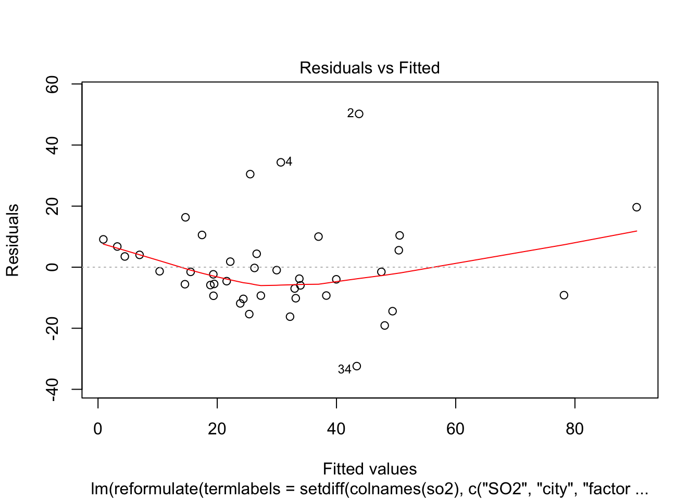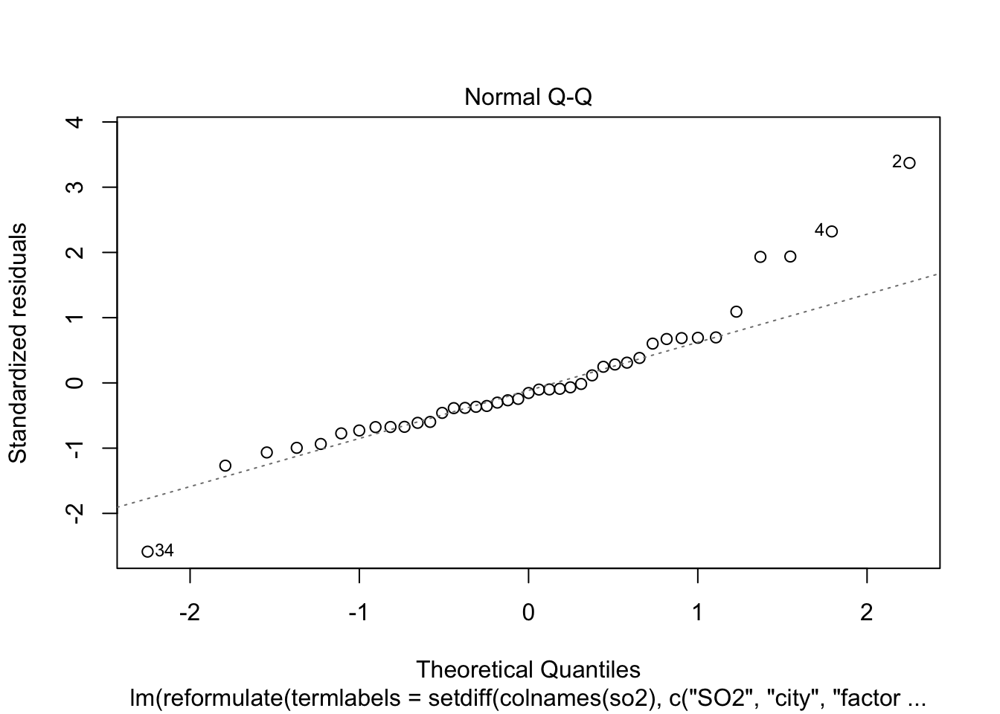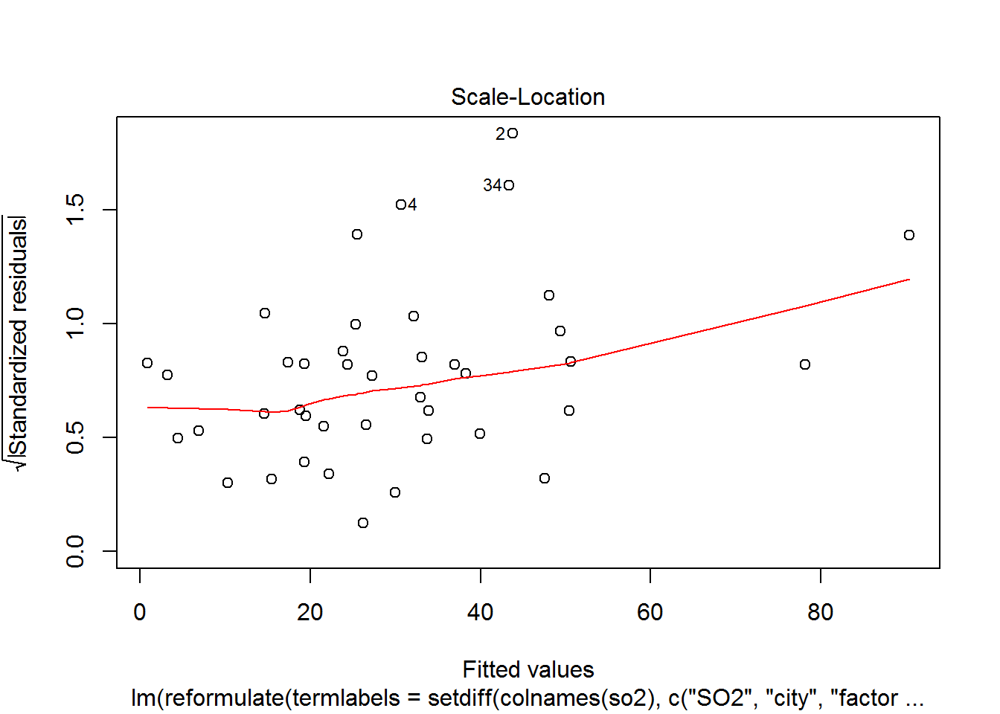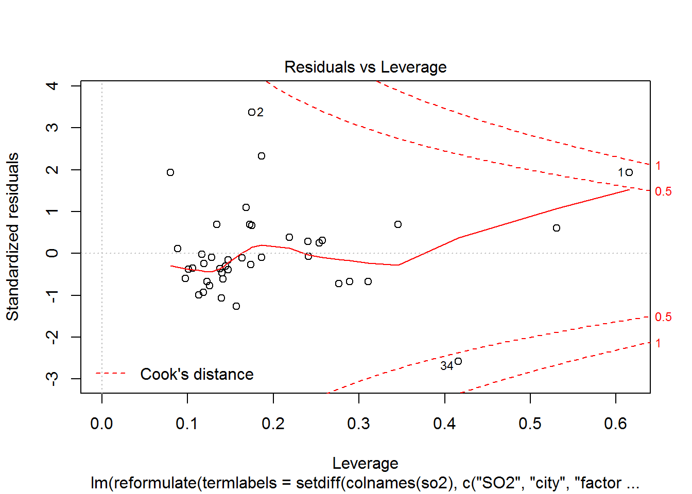
summary(fit_all)
Call:
lm(formula = reformulate(termlabels = setdiff(colnames(so2),
c("SO2", "city", "factories")), response = "SO2"), data = so2)
Residuals:
Min 1Q Median 3Q Max
-32.400 -9.294 -2.339 5.545 50.205
Coefficients:
Estimate Std. Error t value Pr(>|t|)
(Intercept) 125.532414 52.913071 2.372 0.0237 *
temp -1.625661 0.680174 -2.390 0.0227 *
population 0.022152 0.004746 4.668 4.89e-05 ***
wind -3.421554 2.227788 -1.536 0.1341
rainfall 0.469813 0.486524 0.966 0.3412
daysrain -0.051768 0.182500 -0.284 0.7784
regionNortheast 18.235267 9.297707 1.961 0.0583 .
regionMidwest/West -1.829305 9.703580 -0.189 0.8516
---
Signif. codes: 0 '***' 0.001 '**' 0.01 '*' 0.05 '.' 0.1 ' ' 1
Residual standard error: 16.4 on 33 degrees of freedom
Multiple R-squared: 0.5974, Adjusted R-squared: 0.512
F-statistic: 6.996 on 7 and 33 DF, p-value: 3.922e-05Session information
sessionInfo()R version 3.3.2 (2016-10-31)
Platform: x86_64-apple-darwin13.4.0 (64-bit)
Running under: macOS Sierra 10.12.6
locale:
[1] en_US.UTF-8/en_US.UTF-8/en_US.UTF-8/C/en_US.UTF-8/en_US.UTF-8
attached base packages:
[1] stats graphics grDevices utils datasets methods base
other attached packages:
[1] scales_0.4.1 ggplot2_2.2.1 magrittr_1.5 amstR_0.1.3
[5] data.table_1.10.4
loaded via a namespace (and not attached):
[1] Rcpp_0.12.11 survcomp_1.22.0 RColorBrewer_1.1-2
[4] git2r_0.19.0 plyr_1.8.4 tools_3.3.2
[7] digest_0.6.12 evaluate_0.10.1 tibble_1.3.3
[10] gtable_0.2.0 lattice_0.20-35 rlang_0.1.1
[13] Matrix_1.2-10 yaml_2.1.14 prodlim_1.6.1
[16] bootstrap_2017.2 stringr_1.2.0 knitr_1.17
[19] SuppDists_1.1-9.4 rprojroot_1.2 grid_3.3.2
[22] survival_2.41-3 rmarkdown_1.6 lava_1.5
[25] rmeta_2.16 backports_1.1.0 htmltools_0.3.6
[28] survivalROC_1.0.3 splines_3.3.2 colorspace_1.3-2
[31] labeling_0.3 KernSmooth_2.23-15 stringi_1.1.5
[34] lazyeval_0.2.0 munsell_0.4.3 This R Markdown site was created with workflowr